![Nine-panel comic. 1: a telecom company wants help stopping churn; Anand on the DataHack Summit 2017 stage. 2: a simple decision tree that business users can follow. 3: the team optimizes with random forests, SVMs and neural networks; a black box shows higher accuracy. 4: four months later the project was canned; a manager asks ‘But what do I do?’ Caption: the model got better at predicting and worse at helping people act. 5: interpretable model versus black box. 6: a cluster ID table becomes clusters on an India map. 7: maps and cluster profiles suggest actions. 8: moving up and down the ladder of abstraction, from a single car trajectory to many examples to a summary, idea credited to Bret Victor. 9: a clustered heatmap; Anand says build visual summaries to explain models, tools matter less than technique; a model people cannot use is not enough.](comic-page.avif)
Four months later, the project was canned
In the first three minutes of his talk, Anand ran through the numbers. A telecom company was losing about ₹6.61 per customer to churn. A decision tree built by his team at Gramener brought that down to ₹4.0. A support vector machine brought it to ₹2.2. On the client’s side, the project manager was “totally thrilled.” 02:18
Then came the next sentence.
“Four months later, the project was canned. They didn’t implement any of it.”
The model had got better and the client had walked away. Anand’s explanation was blunt: “The problem was actually the accuracy. The problem was that the model was a black-box model.”
That is the puzzle this talk keeps returning to. A data scientist is judged on how well a model predicts. A marketing manager is judged on what they do next. When those two people can’t talk to each other, the better prediction loses. So the useful question is not which model scores higher? but who has to decide what to do with the prediction, and what do they need to see?
The next forty minutes moved through four answers: a churn tree, a map of India’s 640 census districts, a toy self-driving car borrowed from Bret Victor, and a heatmap of currencies. They are four ways of making a model’s output readable.
₹80 to win a customer. ₹40 to keep one.
The telecom’s problem was ordinary. Prepaid customers drift away. The company said about 8% left every month, and Anand added that this meant “roughly by the end of the year, the entire base has churned.” 00:39
If a fixed group of customers loses 8% a month, about 63% have left after twelve months (1 − 0.92¹²), not all of them. Real subscriber bases also gain new customers. The rough version was spoken on stage; the point it supports, that churn is expensive, still holds.
The economics were simple too. Winning a new subscriber cost about ₹80 once you counted KYC, marketing and onboarding. Keeping one with a small offer cost about ₹40. If a model could find the people about to leave, the company could spend ₹40 to save ₹80. Anand quoted the client’s pitch, including his own slip:
“As long as we’re able to identify with a reasonable accuracy who the person is that is likely to leave the network and target the offer to those people, we will be able to easily double our loss due to churn—sorry, even halve our loss due to churn.”

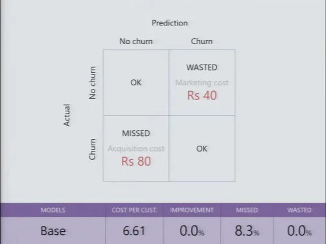
FILM · 00:58A tree that marketing could read
One of the models Gramener built was a decision tree, and Anand read it out like a set of instructions. When did this person last make an outgoing call? More than 15 days ago, and you have probably lost them. Within the last four days, and they are fine. Between five and fourteen days, look at recharges: more than one in the last quarter means they will probably stay. Otherwise, check whether the recharge amount is above a cutoff. 01:15
Try it. The tree below is the one from his slide. The subscribers are made up.
Walk the 2017 tree, then ask the black box why
What’s real and what isn’t: the tree’s structure is copied from the slide at 01:42, including its “$20” cutoff label (Anand said he hadn’t put the real value on the slide). The subscribers and the black box’s outputs are invented to help you think. They are not 2017 data.
Now swap in the upgraded model: same subscriber, same marketing team.
The marketing head asks: “How?” What do you say?
None of these tells marketing which customers to call, why, or what offer to make. Anand said the project manager’s answer “was wavering between something extremely complicated that neither he nor they understood, to roughly, ‘I don’t know, but there’s something that works.’” 03:00 The brain-and-neurons line comes from his next example, a neural network. 04:41
The tree gave you a reason you could repeat in a meeting. The box gave you a better number and nothing to say about it.

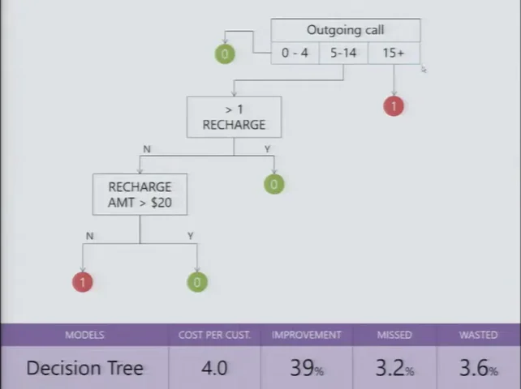
FILM · 01:42Better on paper, dead in practice
Then the team did what any team would do. “Let’s apply the full suite of tools that we have at our disposal. Support Vector Machines, Neural Nets, Random Forest—let’s apply them all.” A tuned random forest was marginally best. They chose the standard support vector machine, which cut the cost to ₹2.2, a 66% improvement. 02:18
When the client’s project manager took the SVM to his management and marketing teams and said, in effect, this will tell you who is going to leave, their question was “How?” He had no answer. They asked about going back to the tree, and the back-and-forth that followed “became very, very painful.”
“They got to the point where we felt we almost shouldn’t have given them the black-box model. We should have said, ‘Look, this is all you can get. It doesn’t get better than that,’ and they would have gone in for it. But the sheer confusion killed that project.”
That is a strange thing for a data science CEO to say: we should have hidden the better model. He wasn’t arguing against accuracy. He was saying that a prediction nobody can explain arrives without a reason, and a reason is what lets someone defend a budget, plan a campaign or argue with a colleague. Without one, the client could not act on the model at all.
“Indistinguishable from witch magic”
“And this is not uncommon.” Anand’s second example was live work at the time: forecasting agricultural prices for a commodity manufacturer, “one of the largest in the globe.” They compared moving averages, auto-regression, exponential smoothing, ARIMA and others. The neural network won consistently, at “anywhere between 70% to 90% accuracy across the board.” 04:05

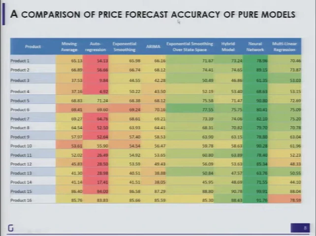
FILM · 04:22The trouble started when the client asked how it worked. “See, think of it like a brain, and then there are these neurons, and they fire and they interact.” Anand described two reactions to that explanation:
“Those that say, ‘Oh, this is such fantastic jargon. I don’t understand it, so my boss also won’t understand it; this is wonderful.’ And there are the people that say, ‘I don’t care. Why is this idiot telling me all this stuff?’”
Neither reaction helps anyone decide anything. That is the problem the rest of the talk works on: “because these models are increasingly becoming effective and increasingly indistinguishable from witch magic, we need a way of trying to understand these.”
Five weeks for the data. Five minutes for the algorithm.
To show what understanding a model looks like, Anand switched to one he could run on stage: K-means clustering. A media company had told Gramener it treated India as two markets, “the Hindi-speaking people and there is the rest of the people”, and made content for each. Yet Bilaspur and Hyderabad, far apart on the map, looked like similar audiences. 06:48
“We shouldn’t even be having a state-based strategy, because intra-state differences can be quite huge and inter-state differences can be quite small.”
The input was a file of India’s 640 districts from the 2011 Census (source): population by sex, literacy, scheduled castes and tribes, workers, religion, asset ownership, education and more. “It took five weeks to collect the data, but the algorithm actually only took five minutes.” The code fits on one screen: read the CSV, drop the three name columns, call KMeans, save the labels. 07:46

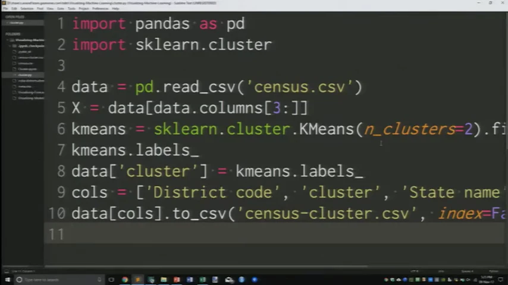
FILM · 05:57n_clusters=2; he changed it to four before running it. The editor cuts off the longest lines on the right.How many clusters? Anand gave two answers. One is mathematical: try two, three, four and see which groups are tight and well separated. The other is to ask the client. “Suppose I gave you 20 clusters. Are you going to be able to create 20 different sets of channels?” They said more than six would be trouble.
“So, it’s a combination of practicality—which is how it’s going to be used, which is pretty important and you better know that before you come up with your answers—as well as the mathematics behind it.”
That is the churn lesson again, before any result exists: the person who will use the output helps decide its shape.
“Great. I have my answer. Does this make any sense?”
He ran it. Out came census_cluster.csv: district code, state, district name, and a cluster column holding 0, 1, 2 or 3. Then he asked the audience whether it meant anything. 10:00
“The algorithm is the easy part. People have solved that problem for us. Our problem begins once the algorithm finishes.”
Put yourself in the media planner’s seat. Each step below is a real frame from the talk, and each one shows the same clustering in a form you can do a bit more with.
You run a TV network. What will you do with “cluster 3”?
All images are frames from the 2017 talk. The original census data and cluster outputs were not recovered, so nothing here is recomputed. The colours and numbering change between steps because each run of K-means numbers its clusters independently.
The first map was drawn in Excel with a VLOOKUP (“I’m not here to teach you Excel”), and even that was enough to see a pattern: “The greens are hovering around the metro areas mostly.” 11:39 Re-running with two clusters gave the client a sentence it could repeat to its programming team:
“Look, if you still want to keep only two segments, that’s fine, but what we’re finding is that parts of UP and Bihar are actually closer in characteristics to the South than the programs that you have in the North.”
“That was useful. In fact, that was the first starting point we had for the engagement because you could just see stuff.” 13:16
“I don’t need a human to pick bright colors”
A map shows where a cluster is. It doesn’t say what the cluster is. So Anand opened a tool Gramener had built (“The point here is not the tool. The point here is the technique.”) and re-clustered the districts into six groups. One cluster, coloured red here, showed up as specks around Delhi, Mumbai–Pune, Bengaluru, Chennai and most of Kerala. “So you can see that 3 is the urban belt.” Punjab stood out as “a beast that’s very different from the rest of the country.” 14:08

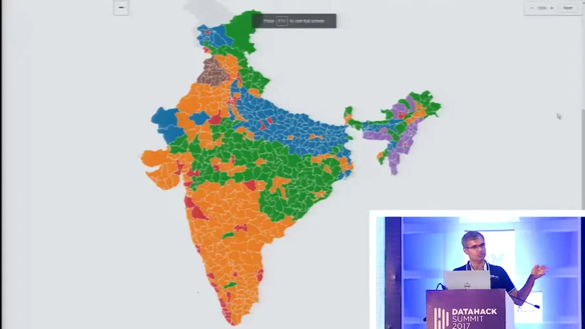
FILM · 14:12
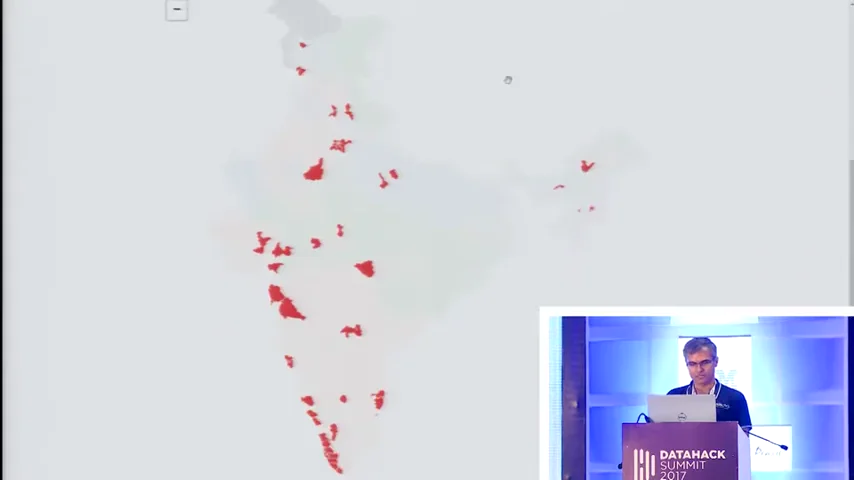
FILM · 14:21Next came the profile: the average of every variable for every cluster, shaded so unusual values stand out. Cluster 3 was the only one low on rural share. Cluster 0 had “an unusually low literacy rate.” Then Anand made the step that turns a dashboard into an explanation:
“I don’t need a human to pick bright colors, right? The system can do that. In fact, that’s what we did. We said, ‘Let’s just have a slider that picks out the brightest colors.’”

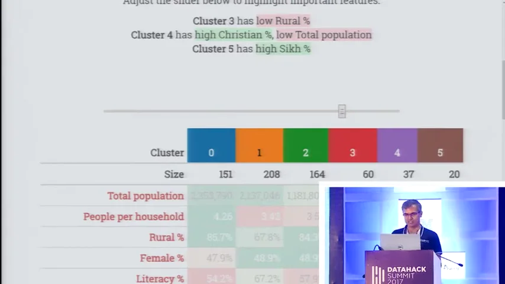
FILM · 16:22Poor. Breakout. Aspirant. Rich.
The version that went to the client had no cluster numbers on it. It had six names, each describing a stage of economic development: “There is the ‘Poor’ districts in which you need a very different segment from the ‘Breakout’ districts where yes, they’re poor, but they’re starting to get educated.” Then Aspirants, Owners, Business and Rich. “And ultimately, they get a feel for what these segments mean through these words and what the strategy for these segments needs to be.” 18:29

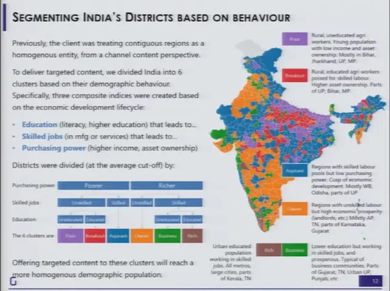
FILM · 19:12Some live-demo profiles rested on religion and caste shares. Anand used one to suggest a different religious channel for the north-east. Those are 2011 district averages, not facts about any person, and K-means only groups similar rows; the meaning comes from the variables someone chose. Read these frames as a 2017 example of interpretation, not as a segmentation to reuse.
The same method then went to the advertisers. Clustering ad buyers by volume, channels, seasons and price points put P&G, HUL, Cadbury and Reckitt together (“big buyers… at very low price points”) and Heinz, Apple and Future Group in a mid-sized group. The payoff was practical: one account manager per peer group, and pitches like this one. 19:46
“What I can do is go to an OLX and say, ‘Look, you belong to a peer of companies that have very similar advertising characteristics. Now Samsung has come up with a strategy of advertising in which they’re focusing heavily on these kinds of slots. Maybe that will be helpful for you.’”
![Slide titled Advertiser Clustering. Four boxes of brand names: P&G, HUL, Cadbury, Reckitt (big buyers across categories at low price points); Godrej, L'Oreal, ITC, GSK, J&J, Amazon, Coke (big buyers with better price and viewership); Dabur, Nestle, Maruti, Airtel, OLX, Samsung (big buyers with low regional advertising); Heinz, Apple, Future Group, LIC, Ford, Amul (mid-buyers with average price and viewership). A blue panel explains how clients were classified by behaviour, with three small charts.](slides/f2026-advertisers.webp) FILM · 20:26
FILM · 20:26
“What helps here is not just the cluster identification. It is the cluster interpretation that comes along with it.” 20:53 But he wasn’t satisfied with a few words under a chart: “what needs to go behind the scenes is an understanding of how one goes about creating these clusters.” To show what that understanding feels like, he borrowed someone else’s work.
A car that turns 2 degrees
“Some of you may have seen Bret Victor’s talk or blog post titled ‘Up and Down the Ladder of Abstraction.’” The essay is Bret Victor’s Up and Down the Ladder of Abstraction (2011). Everything in this section is his design, which Anand demonstrated in his browser. 21:31
The demo nearly didn’t load. “I’ve most certainly made a mistake in not pre-loading this,” Anand said, holding his data card up and offering to “hold it closer to the tower,” until someone offered a faster connection. 22:11 While it loaded, he explained why he’d brought it:
“We don’t understand models through the mathematics of it; that’s not the language that we are used to. We understand models through kinesthetics, by touching and feeling these models.”
The model is deliberately silly. A car drives along a road with a bend. Its only rule: move forward one pixel; if you’re left of the road, turn right by some angle; if you’re right of it, turn left. It has one setting, the angle. At 2°, Anand played it, and it was over before anyone could see what happened. “It’s not going too fast. But it is going too fast for my ability to interpret.” 24:30

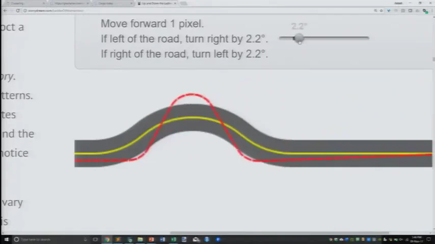
FILM · 26:42So you climb. First a slider for time, to pause and scrub. Then the whole path drawn at once. Then a slider for the angle, and the question every modeller asks: “If it’s not 2 degrees, maybe it should be 3 degrees?” By 8° he had lost track: “I’ve now even forgotten what were the numbers that I used in the past.” 25:31
Up the ladder, and back down
“What we want is to be able to put a curve like this that summarizes all of what I saw.”
Bret Victor’s answer is to stack views. Draw every angle’s path at once, then compress each path to a single score. That gives one line covering every angle. Next comes the move that makes it useful: step back down. Pick a point on the summary and look at the actual path behind it. Anand: “Moving one level down the abstraction.” 27:01
Tune the car yourself, then climb
This is a simplified recreation written for this page, not Bret Victor’s code. The rule is his. The road, the start position and the score (share of the trip spent off the road) are ours, so the numbers won’t match his essay. Try his original ↗
If left of the road, turn right by 2.0°.
If right of the road, turn left by 2.0°.
Even this toy shows what Anand pointed out on stage. Small angles do badly, and 0° looks oddly respectable: the car ignores the bend and drives straight through. In Bret Victor’s version, Anand found the good scores at the left edge came from cars “so far off the curve that the numbers are failing… I’m just completely ignoring the bend and just plowing straight through.” 28:30 A summary can mislead you until you step down and look at a real example.

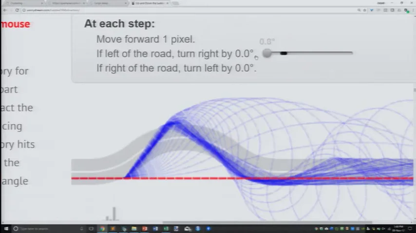
FILM · 28:46
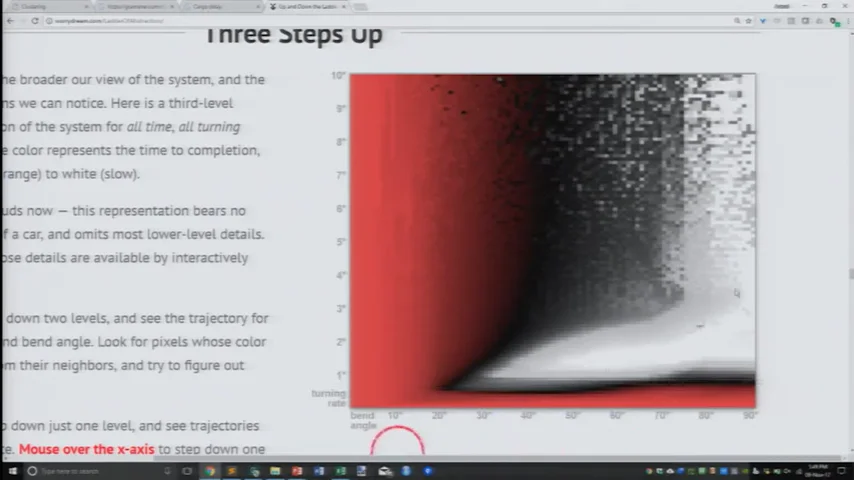
FILM · 29:36Bret Victor goes one rung higher, varying the road’s bend as well as the car’s turn, so the whole model fits in one picture. Anand’s takeaway was general:
“And this is a trivial model. The model literally says go forward by one pixel, turn left or right by X degrees. That’s it. And this is true for almost any kind of model, no matter how simple or complex.”
Consolidate, or hedge?
For the last example Anand left models behind and applied the ladder to plain data: exchange rates against the US dollar, plus a few stock indices and metals. At the bottom rung is a single cell: “on the 6th of November 2013, the Australian dollar was trading at 0.9497 USD.” Each rung up throws away detail and adds comparison. 30:14


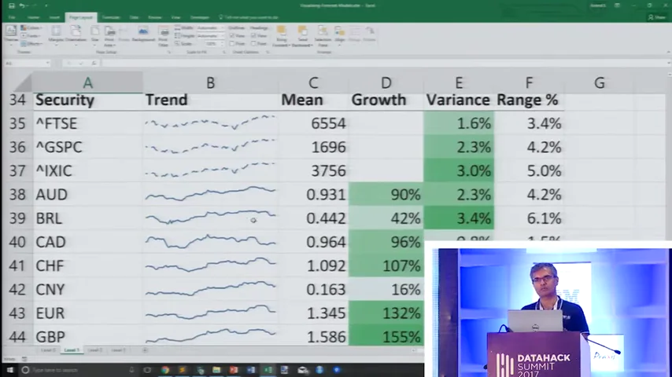
L1
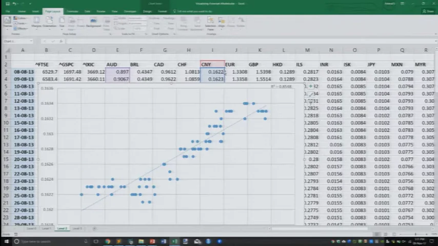
L2
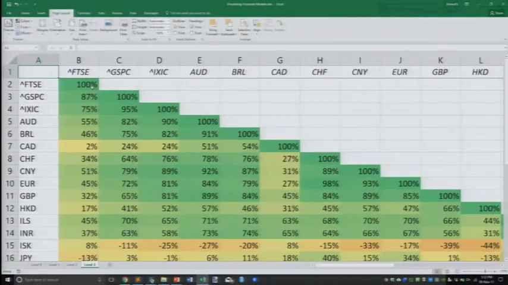
L3Four rungs, all in Excel, from the live demo. Tap any frame to enlarge.
Sparklines show the Canadian dollar, Indian rupee and Philippine peso all dipping and recovering. “Wait a second, I said that three times.” Scatter plots then test whether two currencies move together, and a correlation matrix does that for every pair. The last step came from an earlier Gramener publication: cluster the matrix itself, so securities that move together sit together. “In other words, we were doing clustering on top of correlation.” 33:34

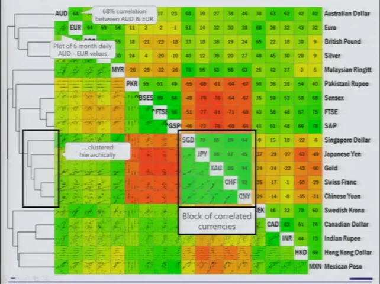
FILM · 34:04And here the picture turns into a decision:
“For a portfolio manager, there are two kinds of decisions: When should I consolidate? When should I hedge?”
Two holdings in the same green block are “practically the same stock”, so you can consolidate. For a hedge, you look for the deepest red. Anand walked through an example: holding Singapore dollars and yen is redundant, so keep the yen; the most negatively correlated asset to the yen was “the Sensex at the moment.” Then the anecdote: when Gramener shared this view with a client, “they made their largest trade in the portfolio segment using this visual.” 35:24
“Not because they weren’t using correlations before. The problem was really about communication.”
This is a 2013 snapshot used as a teaching example. Correlations between currencies change with regimes, and a six-month window can mislead. Correlation says nothing about why two assets move together. The client trade is Anand’s account; no figures were given. The lasting point is about the view, not the positions.
Build a visual summary
With eight minutes left, Anand put up his conclusion. He didn’t soften it:
“Increasingly, the models that are accurate are black-box models. They were complex enough before; now they are beyond hope in terms of understanding. Don’t even try. And therefore, they need interpretation even more so than ever before.”

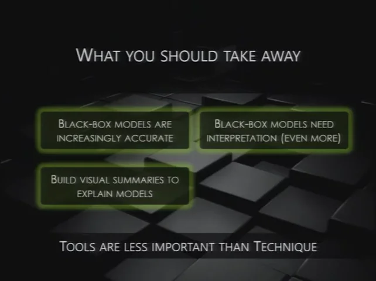
FILM · 36:20Note what he’s not saying. Don’t go back to decision trees. Don’t give up accuracy. Keep the accurate model, and build the view that lets a human use it. “Don’t expect people to say, ‘Okay, because it’s Random Forest, it has to be right.’ That’s the same as saying because it’s witch magic, it will work.” 36:09
“Start at a low level, build it up, summarize it. Then go one level lower and show an example. Build it up two levels. Allow them to change the parameters. Allow them to interact. Walk up and down the ladder of abstraction.”
Tools are rarely the constraint. People are.
He knew the next question, so he answered it before Q&A. Gramener’s 2017 stack was Excel or R for analysis, Python with pandas and Tornado on the server, and in the browser JavaScript with a templating library such as Lodash and D3 for charts. 36:54 Then he waved the choice away:
“I’ve been doing Excel for 25 years and Python for less than 10 years. Anything that I can do in Python, I can do in Excel. Without exception.”
A good part of the demo was in fact Excel: the district map, the VLOOKUPs, all four currency rungs. “The point is that tools are versatile enough and are rarely the constraint. People are the constraint. Techniques are the constraint.” 38:57 His advice: “Pick a person, let them work with whatever tool they’re familiar with.” He signed off by pointing to more examples at gramener.com/demo (today’s page may differ from 2017’s) and one last request: “please do try explaining them as well.” 39:27
Show something. Ask what they see.
There was time for one question. Partho, from General Motors, asked how to pick the right visualisation, like the dendrogram-plus-heatmap he had just seen. 40:22 Anand pointed him to Noah Iliinsky and a chart matching data types to encodings, though he couldn’t recall the book’s title on stage. It is probably Designing Data Visualizations (2011), co-written with Julie Steele. Colour for categories; angles only when there are few of them; ordered categories need something else. 40:40
Then he undercut the rulebook. Chart-picker wizards in Tableau, Power BI and Google Sheets follow those principles and still leave you with too many options. “By following these techniques, you will only learn new ways of going wrong.” 41:53
“Show something, ask the user to make an inference. If the first inference that they make is not what you want, try something else.”
That is the telecom story turned into a method. Test the view on the person who has to act, early. In the telecom project, their first inference was a question, “How?”, and it arrived only after the model was finished. The session host cut the Q&A short for time (“Really sorry.”), and the talk ended mid-thought. 43:06
Back to the telecom
Read the whole talk again from the opening. A tree turned ₹6.61 of churn loss into ₹4.0, and marketing could follow it. A support vector machine turned it into ₹2.2, and nobody could say why. In the rest of the talk, a cluster label became a map, a profile and a name; a steering rule became a path, a bundle of paths and a curve; a column of exchange rates became a heatmap that told someone what to trade. Each time, the model was only usable once someone could see why it said what it said.
The model didn’t fail at predicting. It failed at being explained, and nobody tested that until the project was already dead.
The talk predates the tools most people now associate with “explainable AI,” and didn’t mention any of them. The year before, Ribeiro, Singh and Guestrin had framed the same worry in “Why Should I Trust You?” (KDD 2016): people won’t act on a model they don’t trust. Explanation methods have multiplied since. They carry a caveat Anand’s tree didn’t: a simple explanation of a complex model can itself be wrong. A local reason isn’t the whole model, and explaining a model is not the same job as explaining a business decision.